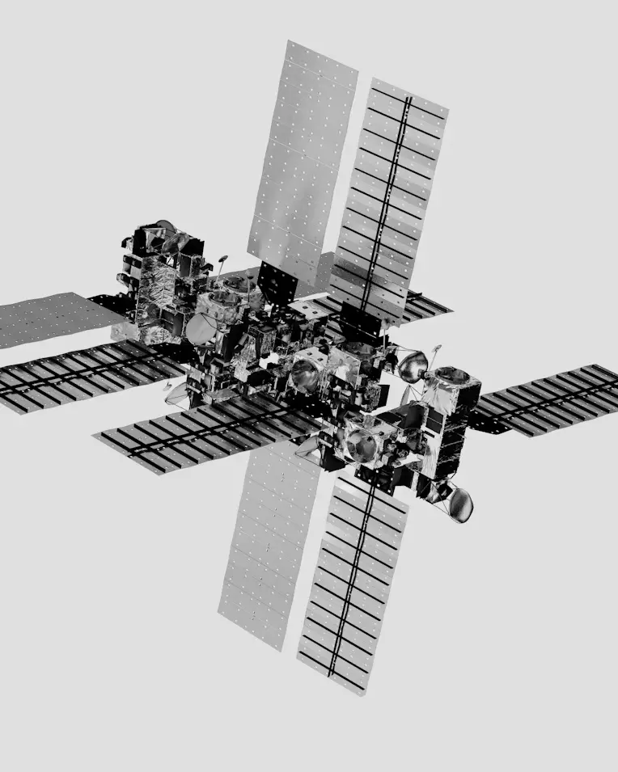
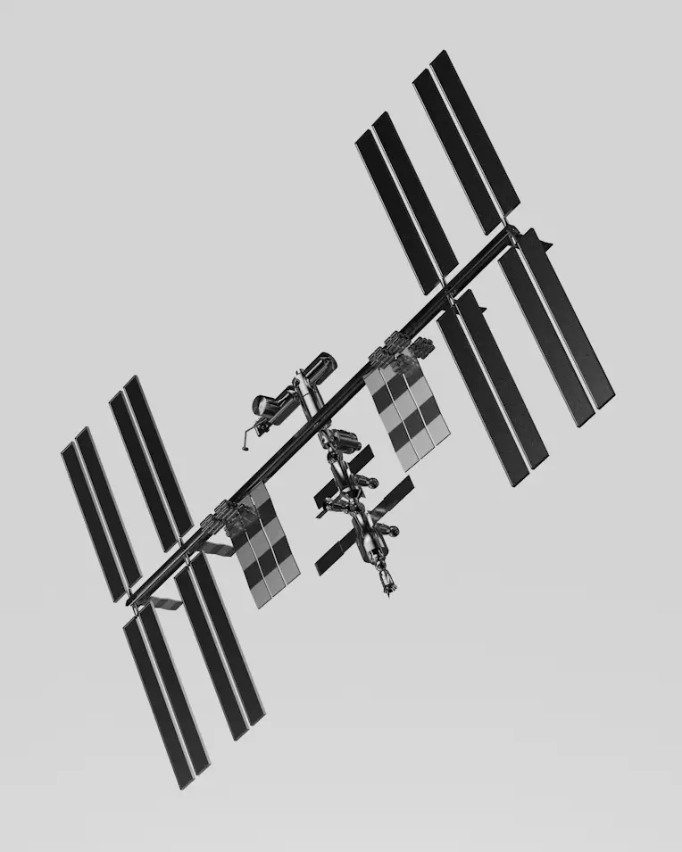
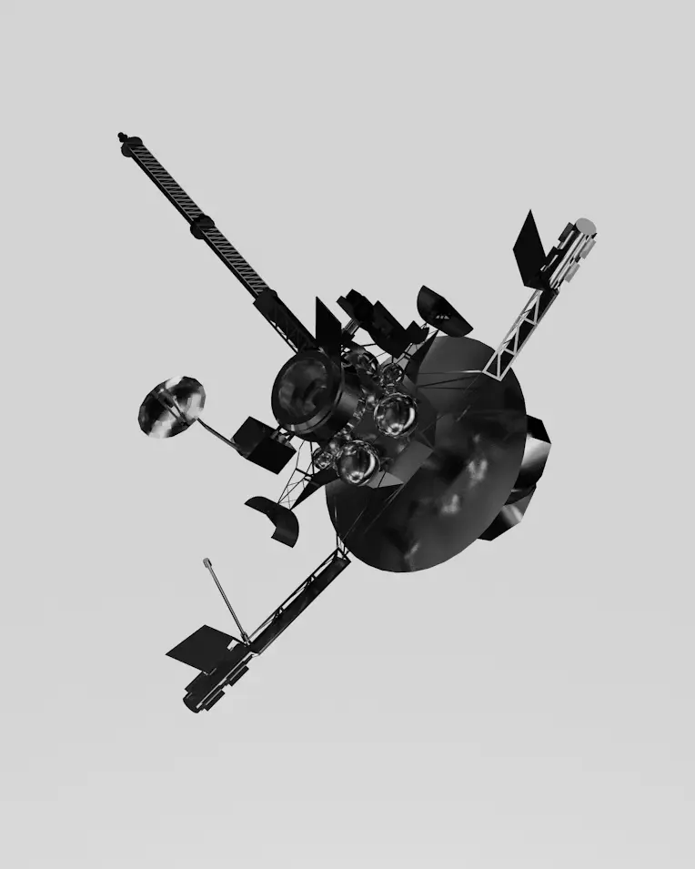

01 // The Vessel Categories

LTV-3 ATLAS
EXACT DELIVERYA high-speed transit unit designed for last-mile delivery of small-form satellites from.
MAX PAYLOAD: 250 KG
ACCURACY: ± 2.5 METERS
PROPULSION: ION DRIVE

MTV-2 BLUE
PART REPLACEMENTA utility-class vessel designed to intercept active constellations to swap hardware.
INTERFACE: UNIVERSAL
TOOLING: ROBOTIC ARMS
WINDOW: 180 DAYS

HTV-3 PROXIMA
SAFE REMOVALA high-thrust recovery vessel built for towing heavy assets.
TOW CAPACITY: 4,000 KG
HULL RATING: REINFORCED
PROPULSION: HYPERGOLIC
02 // Real-Time Network
Live Tracking
| VESSEL NAME | CURRENT LOCATION | ETA (ARRIVAL) | STATUS |
|---|---|---|---|
| ATLAS-05 | Near the Moon | 5 Hours from now | ● ON TIME / IN TRANSIT |
| BLUE-12 | Atmosphere Entry | 22 Minutes | ● DESCENDING |
| PROXIMA-02 | GEO-Stationary Belt | -- | ● MAINTENANCE MODE |